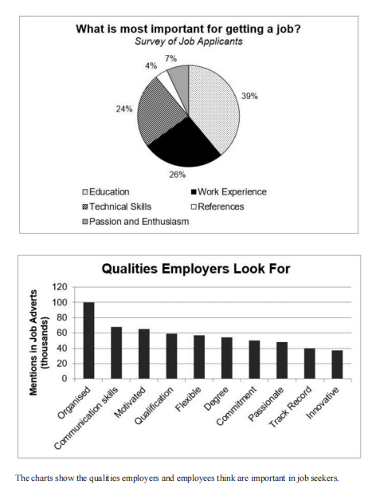

Article
Read the article, then confirm below to continue.
A new era of obesity treatments
Ozempic and Wegovy made headlines in 2023, but a more potent weight-loss drug could reach people in 2024 — with more on the horizon, reports Clare Wilson.
📄 Open articleComprehension & vocab
Questions on the article you just read, plus ten key words from it.
Comprehension
1. According to the article, what was semaglutide originally developed to treat?
2. According to the article, how does semaglutide work in the body?
3. According to the article, what happened to supplies of Ozempic and Wegovy after demand soared?
4. According to the article, what distinguishes Zepbound from Ozempic and Wegovy?
5. According to the article, what did separate studies comparing Zepbound and Wegovy with a placebo suggest?
6. According to the article, what future development is mentioned for injectable weight-loss drugs?
Vocabulary
Writing Task 1: the article
Background reading on recruitment priorities — study the highlighted language before you write.
■ subject synonyms ■ useful Task 1 chunks
Perception Gap in Contemporary Recruitment Dynamics: Applicant Priorities Versus Employer Recruitment Language
The structural alignment between job seeker perceptions and corporate hiring requirements remains a critical point of analysis within modern human resource management. Comparative evaluations of applicant candidate priorities against actual employer job advertisement frequency reveal a fundamental divergence: while job candidates heavily prioritize formal qualifications and hard skill credentials, recruiters explicitly screen for behavioral competencies, organizational traits, and soft interpersonal skills.
Perceptual Mismatch Between Candidates and Recruitment Adverts
Analyzing candidate perspectives alongside real-world recruitment data highlights key operational misalignments:
Over-Indexation on Formal Credentials: Job seekers overwhelmingly view academic backgrounds and technical skill sets as the decisive factor for employment success. Candidates frequently operate under the assumption that formal education and specialized hard skills form the primary barrier to entry, placing less emphasis on personal workplace attributes.
Employer Focus on Organizational and Interpersonal Competencies: Corporate job postings prioritize foundational workplace habits over pure credentialism. Organizational capability stands out as the single most frequently cited requirement in job listings, followed by soft skills such as communication and self-motivation.
Secondary Placement of Formal Degrees in Adverts: While candidate surveys reflect an assumption that academic degrees drive hiring decisions, employer recruitment listings mention explicit degree requirements far less frequently than personal effectiveness traits like adaptability, commitment, and drive.
Marginal Attributes: Secondary factors — such as third-party professional recommendations, formal references, and generalized passion — occupy a lower tier of priority for both job seekers and hiring entities, indicating that demonstrated competency consistently outweighs superficial endorsements.
Comparative Matrix: Candidate Beliefs vs. Employer Adverts
| Talent Domain | Job Seeker Priority | Employer Advert Prevalence | Strategic Alignment |
|---|---|---|---|
| Academic Credentials | Primary Focus | Moderate Frequency | Significant divergence; applicants overvalue formal degrees relative to advert criteria. |
| Technical & Practical Skills | High Priority | Secondary Focus | Candidates view hard skills as mandatory; employers package them alongside soft skills. |
| Workplace Organization | Unspecified / Implicit | Highest Frequency | Major gap; recruiters demand structural self-management far more than applicants anticipate. |
| Communication & Soft Attributes | Low / Indirect | High Frequency | Critical misalignment; interpersonal clarity is an active employer screening filter. |
| References & Endorsements | Minimal Priority | Marginal Frequency | Strong alignment; both parties place low structural weight on recommendations. |
Task 1 report
Mini exam block — write your response with the stopwatch running.
The pie chart shows what job applicants believe is most important for getting hired, while the bar chart shows the qualities employers actually look for in job advertisements. Summarise the information by selecting and reporting the main features, and make comparisons where relevant. Write at least 150 words.

Sample answer
Model response, with useful comparison language marked.
The two charts compare the factors considered most important in securing a job from the perspectives of job applicants and employers.
Overall, a clear contrast can be seen between the two groups: while applicants tend to prioritize formal qualifications and professional experience, employers place significantly more emphasis on personal qualities and soft skills.
According to the pie chart, nearly two-fifths of job applicants believe education is the most important criterion for getting hired. This is followed by work experience, which accounts for 26%, whereas technical skills are considered essential by 24%. Only a small proportion of respondents prioritize passion and enthusiasm (7%) or references (4%).
The bar chart shows that employers value organizational skills most highly, with these being mentioned in exactly 100,000 job adverts. Communication skills and motivation are also frequently sought, appearing approximately 65,000 and 62,000 advertisements, respectively. Other qualities receive fewer mentions but remain relatively close in number, with qualifications, flexibility, degrees, commitment, and passion, all cited between 53,000 and 59,000 times. By contrast, a proven track record (40,000) and innovation (39,000) are mentioned least often.
Reading Practice
Open the test in a new tab, complete it, then come back here.
Full Reading Test
Three passages — Business Cards, Antarctic Research, and Is Artificial Intelligence a Threat? Complete whichever section your teacher assigns.
📖 Open reading passageSpeaking Part 2 & 3
Choose a topic set below. You only get one attempt per question, so make sure you're ready before you start recording.
Video & comprehension
Watch, then answer the questions below.
1. Why have Nike's Vaporfly shoes become controversial in competitive running?
2. What major achievement did Eliud Kipchoge accomplish in 2019?
3. According to Nike, by how much can the Vaporfly improve runners' times?
4. What guideline had World Athletics previously provided regarding running shoes?
5. Why does Peter Thompson believe the Vaporfly should be banned?
6. What type of foam is used in the Vaporfly?
7. What does the full-length carbon-fiber plate add to the shoe?
8. What solution does Jeff Burns propose for regulating advanced running shoes?
9. What happened to Speedo's LZR Racer bodysuit after many swimmers broke world records?
10. How did the Vaporfly feel to the runner during the treadmill comparison?
Gap Fill
Word box: controversy · advantage · marathon · records · competition · guidelines · doping · integrity · foam · carbon-fiber · stiffness · innovation · midsole · friction · energy return
1. Nike's Vaporfly shoes have changed what runners think is possible, particularly in the .
2. Critics argue that the shoes provide an unfair to athletes who use them.
3. The shoes became controversial because they could potentially affect the fairness of .
4. Since the Vaporfly was released, Nike runners have achieved several extremely fast marathon .
5. The shoes have caused a fierce in the running community.
6. World Athletics had previously provided only loose concerning advanced shoe technology.
7. Some people have compared technologically advanced shoes to a form of mechanical .
8. Peter Thompson believes that banning the shoes would help protect the of the sport.
9. The Vaporfly contains a special type of called Zoom X.
10. A full-length plate is another important feature of the shoe.
11. The carbon-fiber plate adds and stability to the shoe.
12. Jeff Burns sees the Vaporfly as an important technological in distance running.
13. Burns suggests regulating the thickness of the rather than banning the shoes completely.
14. The Speedo LZR bodysuit reduced the body's with water by copying the structure of shark skin.
15. The runner said he could feel the shoe's and described it as being like a nice pillow.
Vocabulary Matching
Day 17 complete! 🎉
All 8 tasks done. Come back tomorrow for the next day.